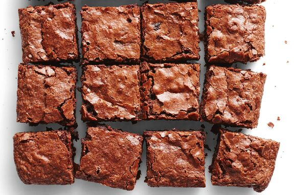

Homemade Brownies Recipe

Description
Get ready for the best Homemade Brownies! Moist, fudgy, chewy, and loaded with chocolate! This easy recipe comes together in minutes. This recipe is tested and perfected – use our tips and tricks to get a delicious result every single time.
Ingredients
- ½ cup melted unsalted butter
- 1 cup granulated sugar
- 2 large eggs
- 2 tablespoons water
- 2 teaspoons pure vanilla extract
- ⅔ cup unsweetened cocoa powder
- ⅔ cup powdered sugar
- ¾ cup all purpose flour
- ½ teaspoon kosher salt
- 1 cup chocolate chips
Steps
- Preheat oven to 350°F. Line an 8×8 (preferred) or 9×9 square pan with foil or parchment paper, leaving a couple inches of overhang on two sides (this will allow you to lift the whole tray of brownies out of the pan for easy removal). Grease the foil/parchment.
- Combine granulated sugar and hot butter in a large bowl. Stir it briefly then allow it to sit undisturbed for 5 minutes. The heat from the butter will begin to dissolve the sugar (this helps make a shiny/crackly crust). After 5 minutes, whisk the butter and sugar vigorously for 30 seconds. The sugar will not fully dissolve but the mixture will come together. Add eggs, water, and vanilla extract, whisking again for about 30 seconds. Tap all the excess batter off the whisk and remove the whisk from the bowl.
- Sprinkle cocoa powder, powdered sugar, flour, and salt over the wet ingredients. Use a rubber/silicone spatula or wooden spoon to stir the mixture until it is glossy and well combined. Stir in the chocolate chips.
- Pour the batter into the prepared pan and smooth the top. Bake the 8×8 pan for for 28-33 minutes (begin checking at 28 minutes). Bake the 9×9 pan for 18-23 minutes (begin checking at 18 minutes). The brownies are done when a toothpick inserted just outside the center comes out moist fudgy crumbs attached but no raw batter. See notes for more on this. Remove from the oven and place the pan on a wire rack to cool completely.